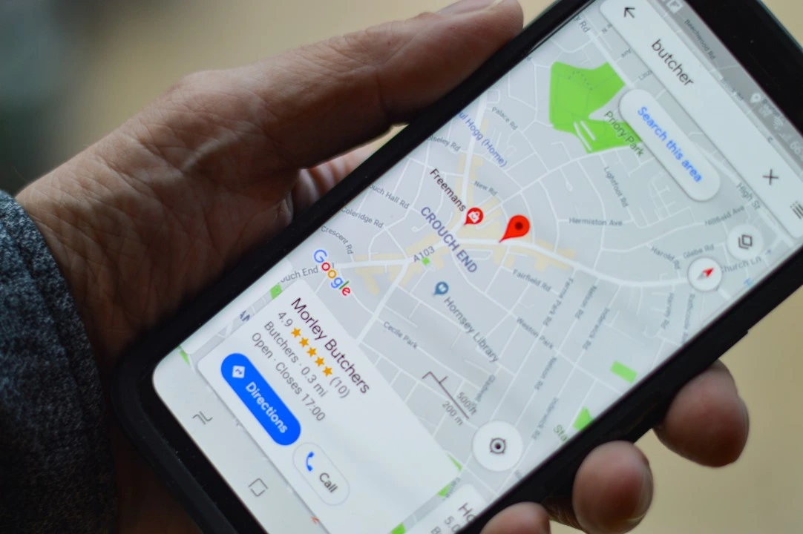

Why businesses should use Google My Business?
In today’s market, local discovery is the backbone of growth. While Google Business Profile (formerly Google My Business) is a cornerstone of digital marketing, it is part of a larger ecosystem of tools—including Bing Places for Business, TripAdvisor, Yelp, and Apple Maps, that allow businesses to place themselves directly in front of local customers. When you create and verify your listings on these platforms, you provide essential, accurate information such as opening hours, address, contact details, website links, menus, and photos When business owners create and verify GMB listing, they can provide accurate information about their business, such as, opening hours, address, contact information, website, menu and photos.
The key benefits for using Google My Business for restaurants are:
- Increased Visibility & Improved Local SEO: Your listing will appear prominently in Google Search Engine Result Page (SERP) and also on Google Maps. It is a great way to increase your restaurant's visibility to potential customers.
- Customer Engagement & Direct Call-to-Action: Platforms now offer "Order with Google" or direct booking integrations with Yelp and TripAdvisor, allowing customers to place pickup orders, book tables, or request services without leaving the search results.
- Reputation Management: hese platforms allows customers to leave reviews, which are critical for building a positive reputation. Verifie business owners, can respond to feedback, directly managing their brand's relationship with the community
- Competitive Advantage: Maintaining active, high-rated profiles on Bing, Yelp, and Google gives you an edge over competitors who may have outdated or unverified information
Essential Platforms to Claim Now:
- Google My Business: The most powerful tool for appearing on Google Search and Maps.
- Bing Places for Business: The second-largest search engine, essential for reaching a different segment of users.
- TripAdvisor: Crucial for the travel and hospitality industry, driving bookings and visibility.
- Yelp: A primary driver for local services and dining, especially popular in the USA.
- Apple Maps: Essential for iOS users and Siri queries.